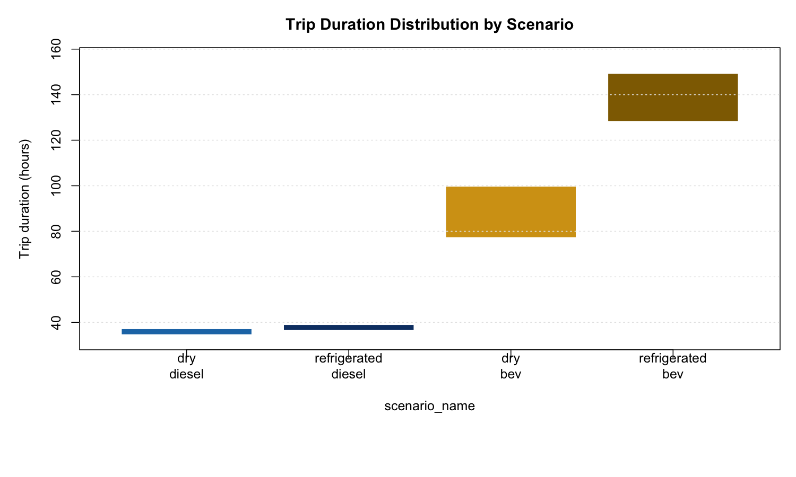

| Powertrain | Product | Origin | N | Mean CO2/1000kcal | P05 | P50 | P95 | Charge Stops | Distance (mi) |
|---|---|---|---|---|---|---|---|---|---|
| bev | dry | dry_factory_set | 5777 | 0.0279 | 0.0170 | 0.0271 | 0.0412 | 15.54 | 1712.2 |
| bev | dry | refrigerated_factory_set | 5777 | 0.0289 | 0.0176 | 0.0280 | 0.0427 | 15.23 | 1773.7 |
| diesel | dry | dry_factory_set | 8925 | 0.0201 | 0.0125 | 0.0148 | 0.0634 | 0.00 | 738.7 |
| diesel | dry | refrigerated_factory_set | 8925 | 0.0203 | 0.0125 | 0.0148 | 0.0649 | 0.00 | 746.2 |
| bev | refrigerated | dry_factory_set | 100 | 0.0455 | 0.0299 | 0.0441 | 0.0683 | 17.01 | 1712.2 |
| bev | refrigerated | refrigerated_factory_set | 100 | 0.0471 | 0.0310 | 0.0457 | 0.0708 | 17.13 | 1773.7 |
| diesel | refrigerated | dry_factory_set | 21634 | 0.0147 | 0.0124 | 0.0146 | 0.0173 | 0.00 | 615.9 |
| diesel | refrigerated | refrigerated_factory_set | 21634 | 0.0147 | 0.0124 | 0.0146 | 0.0173 | 0.00 | 616.6 |
Transport Monte Carlo Results
NoteTotal Runs: 72,872 validated across 8 scenarios
Last updated: 2026-03-18 | FU method: audit-uniform (100% coverage)
Transport Results Snapshot
Production audit: audit_2026-03-17 | 72,872 runs | 8 scenarios Functional unit: kg CO2e / 1000 kcal delivered to retail (audit-uniform method) Design: paired-within-powertrain uncertainty, BEV/diesel x dry/refrigerated x centralized/regionalized
Run Metadata
- Audit ID:
audit_2026-03-17 - Scenarios: BEV/diesel x dry/refrigerated x centralized/regionalized (8 combinations)
- Total runs: 72,872 (61,118 diesel + 11,754 post-fix BEV)
- Workers: 4 GCP + 4 Azure
- Validation status: PASS
- FU method:
audit_uniform— payload_kg = payload_max_lb_draw x load_fraction x 0.453592 - FU coverage: 100% (all 72,872 rows)
- Reporting basis: distribution-stage transport only
- Previous baseline:
local_chunked_run(80 runs, 2026-03-09) — see below
Production Audit Results (72,872 runs, audit-uniform FU)
Comprehensive Scenario Statistics
Audit Figures


Functional Unit Sensitivity Analysis
Important
Key finding: The BEV-vs-diesel ranking reverses depending on which functional unit denominator is used. This is a first-order determinant of the comparison for refrigerated cold-chain freight.
Four methods for computing the FU denominator (kcal delivered) were compared:
| Method | Payload Source | Mean Payload (kg) | Coverage |
|---|---|---|---|
| Audit uniform | Trailer max x load fraction | ~19,050 | All 72,872 rows |
| Exogenous draw | Stochastic cargo weight | ~10,882 | 26,152 rows |
| Legacy stored | Old pipeline (unknown) | ~7,554 | 46,720 rows |
| Phase2 load model | Cube+weight packing | dry: 16,442 / refrig: 3,370 | 80 rows |
BEV vs Diesel Ranking by FU Method
| Product | Method | Diesel Mean | BEV Mean | BEV - Diesel | % Reduction | BEV Wins |
|---|---|---|---|---|---|---|
| dry | C_audit_uniform | 0.0202 | 0.0284 | 0.0082 | -40.4 | FALSE |
| dry | B_exo_draw | 0.0414 | 0.0531 | 0.0117 | -28.3 | FALSE |
| dry | D_phase2 | 0.0743 | 0.0325 | -0.0418 | 56.3 | TRUE |
| refrigerated | C_audit_uniform | 0.0147 | 0.0463 | 0.0316 | -215.6 | FALSE |
| refrigerated | D_phase2 | 0.6684 | 0.2883 | -0.3800 | 56.9 | TRUE |
Under cube-limited physical loading (phase2), refrigerated product loads only ~3.4 tonnes per truck. This small denominator amplifies per-FU emissions for both powertrains, but BEV’s lower absolute CO2 per trip gives it a ~57% advantage. Under trailer-max normalization (audit-uniform), payload is ~19 tonnes, inflating kcal_delivered by ~5.6x for refrigerated freight and erasing the BEV advantage — an artifact of the denominator assumption.


Denominator-Free Metrics (FU-Insensitive)
To avoid denominator dependence, ISO 14083-aligned metrics are also reported:
| Powertrain | Product | N | CO2/tonne-km | CO2/mile | CO2/trip (kg) |
|---|---|---|---|---|---|
| bev | dry | 5777 | 0.0326 | 0.997 | 1707.7 |
| bev | dry | 5777 | 0.0326 | 0.997 | 1769.0 |
| diesel | dry | 8925 | 0.0507 | 1.552 | 1233.7 |
| diesel | dry | 8925 | 0.0506 | 1.549 | 1244.8 |
| bev | refrigerated | 100 | 0.0351 | 1.074 | 1839.7 |
| bev | refrigerated | 100 | 0.0351 | 1.074 | 1905.7 |
| diesel | refrigerated | 21634 | 0.0477 | 1.461 | 899.7 |
| diesel | refrigerated | 21634 | 0.0477 | 1.461 | 900.7 |
On a per-tonne-km basis, BEV (0.033) outperforms diesel (0.051) by ~36% for dry product, independent of the FU denominator choice. Per-mile, BEV (1.00 kg/mi) outperforms diesel (1.55 kg/mi) by ~36%.
FU Sensitivity Summary by Method
| Product | Powertrain | FU Method | N | Mean CO2/FU | SD | P05 | P50 | P95 | Mean Payload (kg) |
|---|---|---|---|---|---|---|---|---|---|
| dry | bev | phase2_load_model | 20 | 0.0325 | 0.0096 | 0.0181 | 0.0321 | 0.0482 | 16442 |
| dry | bev | exo_draw | 11554 | 0.0531 | 0.0190 | 0.0284 | 0.0500 | 0.0888 | 10884 |
| dry | bev | audit_uniform | 11554 | 0.0284 | 0.0075 | 0.0172 | 0.0276 | 0.0419 | 19048 |
| dry | diesel | phase2_load_model | 20 | 0.0743 | 0.0047 | 0.0691 | 0.0737 | 0.0831 | 16442 |
| dry | diesel | legacy_stored | 3452 | 0.0283 | 0.0101 | 0.0166 | 0.0259 | 0.0487 | 10885 |
| dry | diesel | exo_draw | 14398 | 0.0414 | 0.0375 | 0.0168 | 0.0278 | 0.1272 | 10882 |
| dry | diesel | audit_uniform | 17850 | 0.0202 | 0.0157 | 0.0125 | 0.0148 | 0.0641 | 19051 |
| refrigerated | bev | phase2_load_model | 20 | 0.2883 | 0.1066 | 0.1406 | 0.2849 | 0.4379 | 3370 |
| refrigerated | bev | exo_draw | 200 | 0.0889 | 0.0299 | 0.0497 | 0.0807 | 0.1403 | 10664 |
| refrigerated | bev | audit_uniform | 200 | 0.0463 | 0.0121 | 0.0300 | 0.0453 | 0.0707 | 19067 |
| refrigerated | diesel | phase2_load_model | 20 | 0.6684 | 0.2257 | 0.3254 | 0.6639 | 1.0755 | 3370 |
| refrigerated | diesel | legacy_stored | 43268 | 0.0481 | 0.0176 | 0.0274 | 0.0442 | 0.0829 | 10883 |
| refrigerated | diesel | audit_uniform | 43268 | 0.0147 | 0.0015 | 0.0124 | 0.0146 | 0.0173 | 19050 |
Previous Baseline (local_chunked_run, 80 runs)
Core Scenario Results (Baseline)
| Scenario | N | Mean | Median | P05 | P95 |
|---|---|---|---|---|---|
| dry_bev | 20 | 0.032456 | 0.032067 | 0.018103 | 0.048176 |
| dry_diesel | 20 | 0.074290 | 0.073696 | 0.069105 | 0.083144 |
| refrigerated_bev | 20 | 0.288330 | 0.284909 | 0.140584 | 0.437945 |
| refrigerated_diesel | 20 | 0.668364 | 0.663923 | 0.325368 | 1.075532 |
Paired Delta Results (Baseline)
Baseline Diagnostic Figures





Animation Outputs
Monte Carlo Dynamics
Route Comparison (Diesel vs BEV)
Note
Updated: Route comparison animations regenerated from the 72,872-run audit-uniform dataset with correct reefer metrics (diesel TRU: 11.2 gal/trip, BEV electric TRU: 439 kWh/trip).
If your browser blocks inline playback from GitHub Pages, use the direct download bundle below.
Download Bundles
Production Audit (2026-03-17, 72,872 runs, audit-uniform FU)
- Audit figures ZIP (24 figures including FU sensitivity)
- Audit data ZIP (7 tables + 2 memos)
Baseline (local_chunked_run, 80 runs)
Raw files: